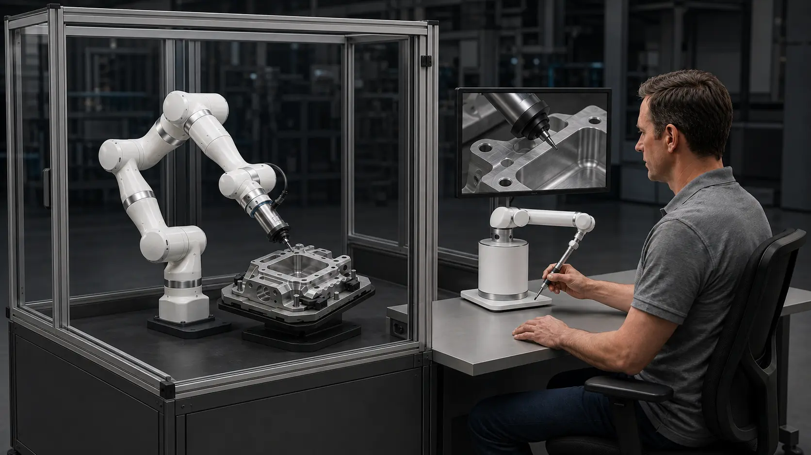
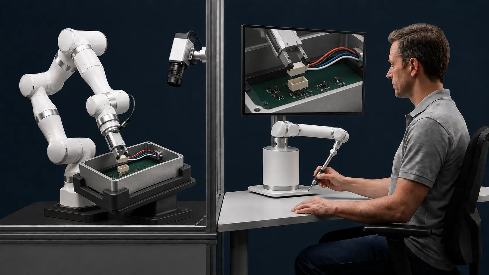

Too variable for fixed automation
Rigid paths work best when products and conditions repeat. Precision work often does not.
Human-guided robotics
SYNA is building a haptic robotic system that helps skilled operators perform contact-rich industrial tasks with greater consistency, endurance, and flexibility — starting with precision finishing and deburring.

01 / The challenge
Precision finishing and deburring require continuous judgment, controlled physical contact, and adaptation to small differences between parts.
In high-mix, low-volume production, conventional automation can be too rigid or too costly to re-engineer for every variation. Manual work remains adaptable, but its capacity and consistency can be constrained by fatigue and the availability of experienced technicians.
Rigid paths work best when products and conditions repeat. Precision work often does not.
Quality depends on how the tool meets the part, not only where it moves.
When skilled capacity is limited, critical production cannot expand with demand.
The challenge is to scale skilled execution without removing the human judgment that makes it effective.
02 / How it works
SYNA is building a bilateral haptic system that maps an operator’s motion to a robotic executor and returns contact forces and moments to the operator in real time.
The human remains in control and responds to process variation, while the robot performs the physical task.

The operator remains responsible for process decisions.
The system is designed to support stable execution over longer periods.
Human guidance aims to make changing work easier to accommodate.
03 / Possible applications
Both applications depend on operator judgment, direct physical control, and the ability to respond when parts or contact conditions change.
A contact-rich process where force, tool angle, and small differences between parts demand continuous operator judgment.
A possible extension for variable pick, place, insertion, and connector tasks that benefit from direct human guidance.
These are possible application directions, not validated product claims. SYNA is currently at the concept and technical-development stage.
04 / Path forward
Synchronized motion, force, visual, and process data could create a practical path from human-guided work to intelligent assistance.
Start with the operator in control and the robot performing the physical task.
Use motion, force, visual, and process data to develop guardrails and preserve expert knowledge.
Automate selected parts of validated processes while keeping people responsible where judgment is needed.
The goal is not to remove human expertise. It is to make that expertise more productive, sustainable, and transferable.
05 / Company
Founder · Algorithms & Control Systems Engineer
Tzahi brings experience from the defense industry, with expertise in advanced control systems, robotics, and deep learning.
He holds an M.Sc. in Autonomous Systems and Robotics and a B.Sc. in Mechanical Engineering from the Technion – Israel Institute of Technology.
Connect on LinkedIn